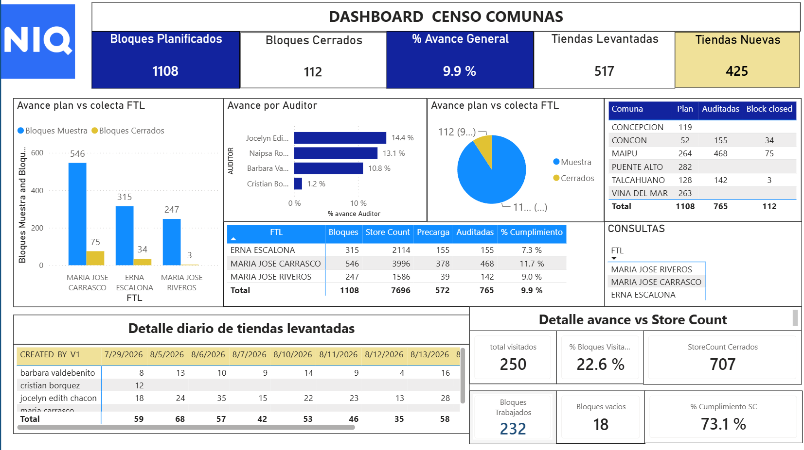
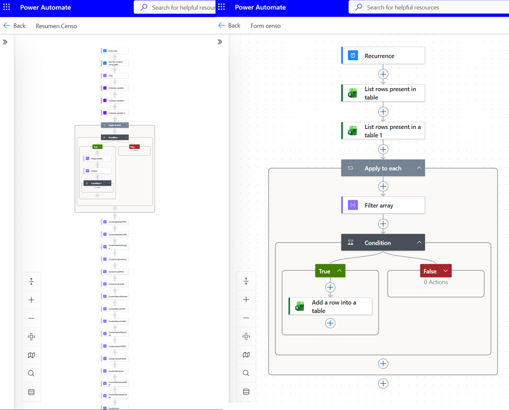

Carga de información
Los archivos generados durante el proceso de colecta son cargados en una estructura centralizada dentro de SharePoint.
SharePoint
Excel Online
Sistema de seguimiento, validación y control del avance de procesos de censo de tiendas a nivel nacional.
Smart Censo Comunas es una solución orientada al seguimiento y control del proceso de censar tiendas en diferentes comunas del país.
La información es obtenida desde una aplicación externa utilizada para realizar la colecta en terreno. El desafío consiste en transformar esa información operacional en una herramienta que permita conocer diariamente el avance real del proceso.
El sistema permite comparar las tiendas encontradas con la muestra planificada, identificar diferencias, detectar inconsistencias y determinar qué sectores o bloques requieren seguimiento o supervisión.
El proceso requería realizar seguimiento constante sobre la cantidad de tiendas planificadas y las tiendas que efectivamente estaban siendo encontradas durante la colecta.
La información debía ser cruzada entre diferentes fuentes para determinar el estado real del proceso, detectar inconsistencias y encontrar sectores con bajo porcentaje de cumplimiento.
Además, el seguimiento debía estar disponible al inicio de cada jornada sin depender de una revisión manual durante la mañana.
Los archivos generados durante el proceso de colecta son cargados en una estructura centralizada dentro de SharePoint.
La información de colecta es integrada con la muestra planificada y otras fuentes necesarias para determinar el avance real del proceso.
El modelo permite comparar las tiendas planificadas con las encontradas, identificar inconsistencias y detectar bloques con bajo porcentaje de cumplimiento.
Después de la actualización nocturna, Power Automate utiliza la información disponible para generar y distribuir automáticamente los principales reportes de seguimiento.
El proceso funciona como una cadena automatizada desde la carga de información hasta la distribución de los resultados.
Componentes visuales del ecosistema desarrollado.
El dashboard concentra los principales indicadores del proceso y permite analizar rápidamente el avance de la muestra, detectar inconsistencias y priorizar puntos que requieren seguimiento.
La visualización permite transformar los datos procesados en información accionable, facilitando el seguimiento del proceso desde distintas dimensiones.
Los indicadores pueden utilizarse para identificar diferencias entre la muestra planificada y la información efectivamente obtenida durante la colecta.

Durante la noche se actualizan las fuentes de información y el modelo de Power BI.
Una vez disponible la información actualizada, Power Automate genera y distribuye automáticamente los principales resúmenes necesarios para el seguimiento operacional.
De esta forma, el equipo comienza la jornada con información actualizada sobre el avance, los problemas detectados y los puntos que requieren atención.
La automatización permite trasladar la preparación de información desde un proceso manual hacia un flujo programado y conectado con el ecosistema Microsoft 365.

Comparación entre las tiendas planificadas y las tiendas efectivamente encontradas durante la colecta.
Identificación de diferencias o situaciones que requieren revisión antes de continuar el proceso.
Identificación de tiendas o registros que permanecen pendientes de cierre.
Identificación de bloques con bajo porcentaje de tiendas encontradas para facilitar la priorización de acciones de supervisión.
Se construyó un sistema automatizado de seguimiento, validación y avance del proceso de censo.
La información queda disponible de forma estructurada y actualizada para comenzar la jornada con una visión clara del estado del proceso.
La intervención humana se reduce principalmente a la carga de los archivos en la carpeta correspondiente de SharePoint, mientras que el procesamiento, análisis, validación y distribución de los resultados se ejecuta automáticamente.
El resultado es un proceso más consistente y escalable, donde Power BI concentra el análisis y Power Automate permite distribuir la información sin depender de una preparación manual diaria.
Nota: este caso de estudio presenta la arquitectura, metodología y tecnologías utilizadas de forma general. Los datos, nombres de clientes, información comercial y elementos confidenciales han sido omitidos o generalizados.